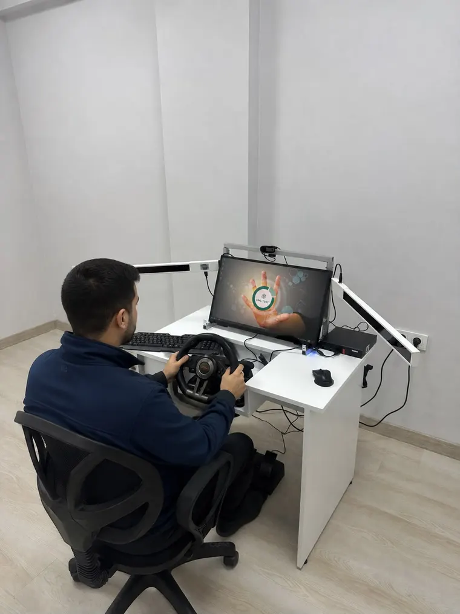

Sağlık Bakanlığı Onaylı Psikoteknik Değerlendirme Merkezi
Kiraz, İstiklal, Cumhuriyet, İğdere, Umurcalı ve çevresindeki süt, tarım, nakliye, yolcu taşıma ve yük nakliyatı gerçekleştiren tüm ticari araç sürücülerimize Sağlık Bakanlığı onaylı psikoteknik test hizmeti sunuyoruz. Ödemiş-İzmir karayolu hattı üzerinden merkezimize ulaşım sağlayan Kirazlı sürücülerimiz için yetkili psikoloğumuz rehberliğinde ortalama 1 saat süren simülatör testini gerçekleştiriyoruz. Zaman kaybetmeden randevunuzu planlamak için hemen iletişime geçebilirsiniz.
Merkezimizde psikoteknik değerlendirme testi uygulanır. Test sonrasında psikiyatri uzmanı muayenesi gerekir; nihai değerlendirme ve rapor onayı muayeneyi yapan doktora aittir.

Kiraz'dan Merkezimize Nasıl Gelinir?
Kiraz ilçe merkezinden merkezimize araç rotası, güncel yol durumu ve tahmini varış süresi haritada gösterilir.
Mesafe ve varış süresi haritada Google Haritalar tarafından anlık hesaplanır ve trafik durumuna göre değişir. Bulunduğunuz yerden güncel yol tarifi almak için aşağıdaki butonu kullanabilirsiniz.
Sıkça Sorulan Sorular
Sıra beklemeden işleminizi hızlıca tamamlayabilmemiz için gelmeden önce telefon veya WhatsApp üzerinden randevu almanızı rica ederiz.
Simülatör testimiz ortalama 1 saat sürmektedir. Testin ardından en geç 45 gün içinde bir psikiyatri uzmanına muayene olmanız gerekir. Nihai değerlendirme ve onay muayeneyi yapan doktora aittir; doktorun onay vermesi halinde rapor e-Devlet üzerinden “Psikoteknik Belgesi Sorgulama” ekranında görüntülenebilir.
Sadece ehliyetiniz ve T.C. kimlik kartınızla merkezimize gelmeniz yeterlidir.
Adaylarımızın Değerlendirmeleri
Merkezimizde testini tamamlayan sürücülerimizin Google Haritalar'da paylaştığı yorumlar
İlgi ve alakanız için çok teşekkür ederim ✨
her konuda yardımcı oldu sağolsun burak bey işini severek ve özenle yapıyor
Gösterilen ilgi ve alaka çok memnun edici teşekkür eder devamlılığınızı dilerim
Bizi Takip Edebilirsiniz
Testini tamamlayan adaylarımızı, merkezimizden kareleri ve güncel duyuruları Instagram hesabımızda paylaşıyoruz.
@izmir_karabaglar_psikoteknik